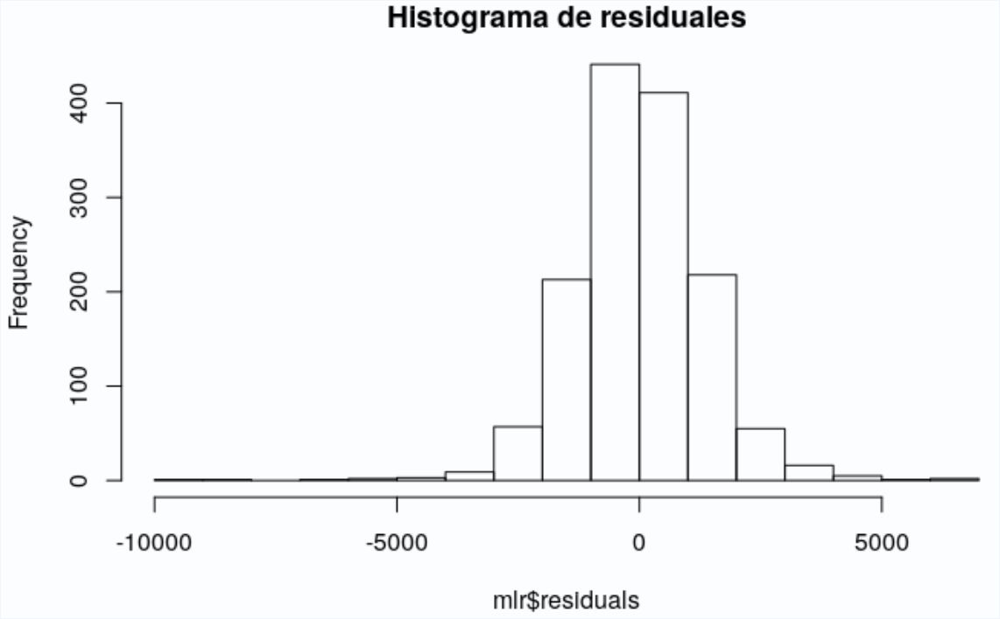
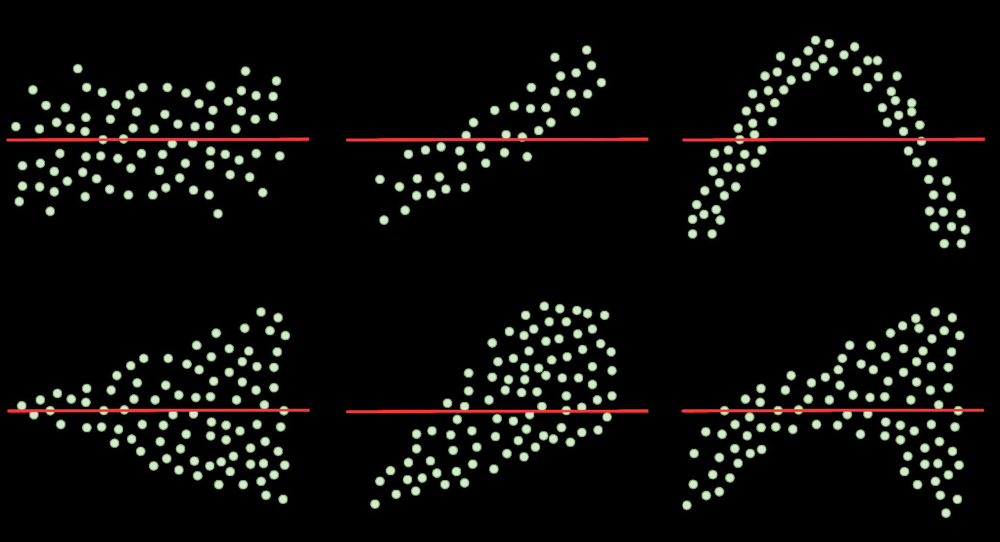
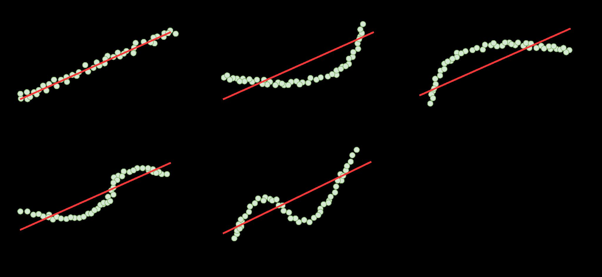
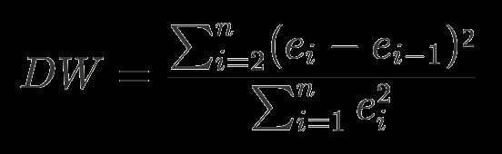
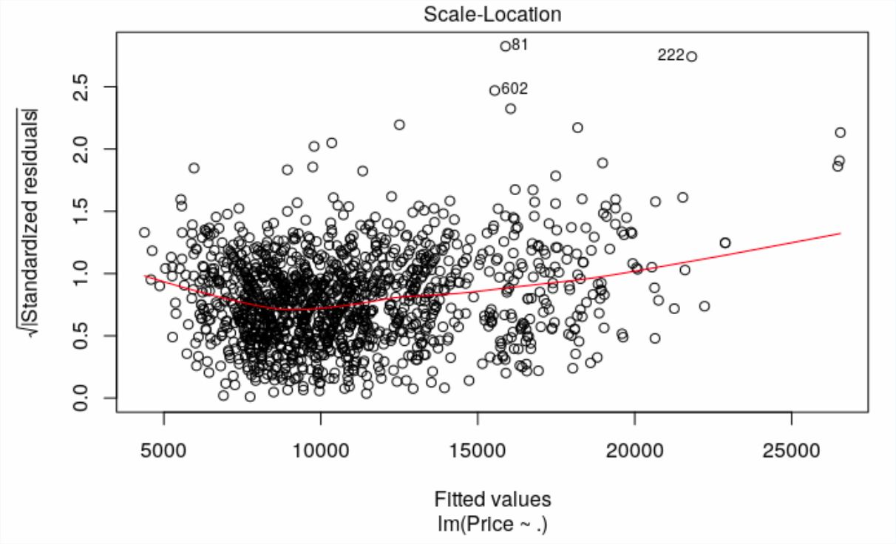
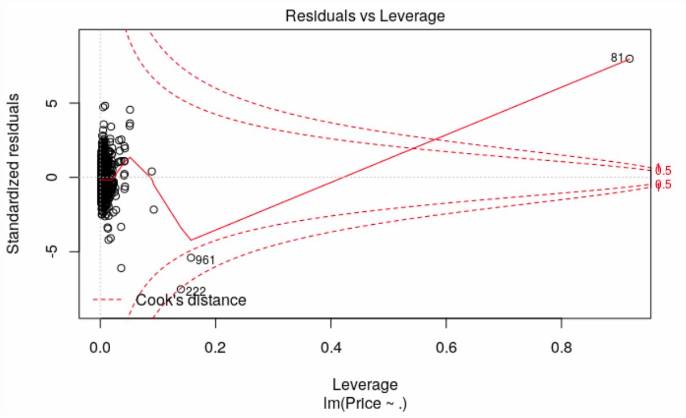
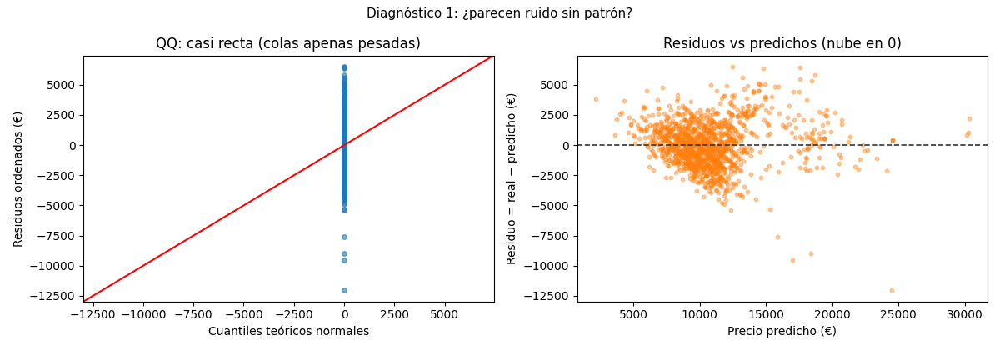
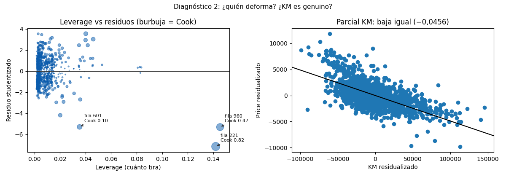

Bloque D · Regresión lineal, selección y regularización · Lección 0025 · mié 9 / mar 15 sep
Diagnóstico OLS: residuos, QQ, Cook y parcial
Win de hoy: replicar la Parte 3 del análisis de ejemplo sobre el OLS múltiple: QQ casi recto, fila 221 con Cook 0,82 (peso 1615) y efecto KM genuino (−0,0456 aislado).
1 · Análisis de valores residuales: las 4 condiciones
Un residuo es lo que la fórmula no explica, auto por auto: precio real menos precio predicho. Para confiar en el OLS, los residuos deben cumplir 4 condiciones: media 0 (no sesgo sistemático), normalidad (campana), independencia (un error no arrastra al siguiente) y homocedasticidad (misma dispersión en todo el rango). El primer vistazo es el histograma: pico en 0 y forma de campana.

El QQ plot (Fig. 7, abajo) afina la normalidad: sigue la diagonal con colas apenas pesadas, y la nube residuos-vs-predichos flota en 0 sin embudo claro — mejor que la simple (0003), que abanicaba. Detalle: Jarque-Bera rechaza normalidad (p ≈ 0)… con n = 1436 cualquier micro-desvío “rechaza”: el gráfico manda, el test obedece (el pie completo del summary se lee en la 0048).
Sesgo y homocedasticidad se juzgan a ojo con patrones de referencia. El ideal es el panel a): sin sesgo (nube centrada, sin curva) y homocedástico (mismo ancho en todo el rango). Cualquier curva, embudo o deriva delata qué condición falla:


La independencia se mide con Durbin-Watson (DW): compara cada residuo con el anterior; 2 = independencia total y la regla sana es 1,5–2,5 (cerca de 0 = autocorrelación positiva, cerca de 4 = negativa).

En Toyota, el OLS con todas las variables da DW ≈ 1,70 (sano, según clase); nuestro OLS de 9 variables da DW ≈ 1,08: apenas bajo el 1,5, autocorrelación positiva leve —otro aviso de que faltan variables, consistente con el R² 0,741 (no perfecto).
2 · Leverage y Cook: las 3 filas que tiran
Leverage mide cuánto tira cada auto; la distancia de Cook combina tiro × error. Top-3:
- Fila 221 (Cook 0,82): pesa 1615 kg (el máximo; lo típico es ~1070). ¿Error o furgón? Lupa.
- Fila 960 (Cook 0,47): pesa 1480, leverage máximo (0,145). Misma pregunta.
- Fila 601 (Cook 0,10): ¡el KM=1 de 50 meses de la 0004! El error de carga reaparece solo.
Protocolo 0004: influyente ≠ culpable. Se mira, se documenta, se prueba sin ellas; no se borra en silencio.
2.1 · Scale-Location: homocedasticidad de un vistazo
El Scale-Location plot grafica la raíz de los residuos estandarizados contra los predichos: si la línea de tendencia sale horizontal, la dispersión es pareja (homocedasticidad); si sube o baja, hay embudo. Es el “¿el ancho cambia?” en un solo gráfico.

2.2 · Residuals vs Leverage: quién es influyente
El Residuals vs Leverage plot cruza error × tiro en un plano: cada auto es un punto, y los que caen fuera de la línea discontinua (contornos de Cook) son influyentes de verdad. Es la versión gráfica del top-3 de arriba: 221, 960 y 601 serían los puntos que se escapan del rebaño.

3 · Parcial KM: el efecto es genuino
La regresión parcial de KM pregunta: si todos pesaran/potenciaran igual, ¿KM seguiría bajando el precio? Sí: pendiente −0,0456, idéntica al coeficiente (teorema, no casualidad). El kilometraje no es un espejismo de la edad o el equipamiento: es causa propia. Al dueño de la concesionaria: “cada 10.000 km, ~456 € menos, todo lo demás igual”.
4 · Figuras: los 4 chequeos


Regenerar las figuras (mismo resultado versionado en assets/img/toyota/):
python scripts/make_figures.py --only diagnostico-ols-qq-cook5 · Quiz (auto-chequeo inmediato)
6 · Fuente primaria y cierre
Para profundizar (1 fuente): Documentación de statsmodels — gráficos de diagnóstico e influencia (statsmodels.org, también en RESOURCES.md del curso).
¿Algo no quedó claro? Preguntame al agente: leer tu QQ, decidir con un Cook alto, o contarle el parcial al negocio. Esa pregunta vale más que releer.
Orden Bloque D: siguiente en el bloque, 0048 · Tercera parte de la salida: Omnibus, skew, kurtosis, JB + MSE: el pie del summary con números y la tarea de cátedra.